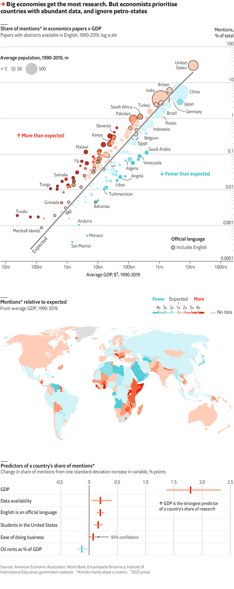
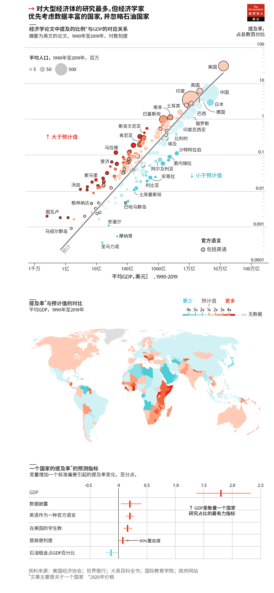

2020-12-31T13:19:37+00:00
Economic research
经济研究
經濟研究
Starving for knowledge
渴求知识
渴求知識
Economists look at more than gdp when choosing countries to study
经济学家在选择要研究的国家时，考虑的不仅仅是GDP
經濟學家在選擇要研究的國家時，考慮的不僅僅是GDP
ECONOMIC RESEARCH can reverberate beyond the ivory tower. In 2003 a study of Kenyan schools found that treating intestinal worms improved attendance. After similar work confirmed the policy’s benefits, one author, Michael Kremer, founded an NGO that treats 280m children a year.
经济研究可以在象牙塔之外产生反响。2003年，一项针对肯尼亚学校的研究发现治疗肠道蠕虫可以提高学生出勤率。在类似的研究证实了这项政策的好处后，该研究的作者之一迈克尔·克雷默（Michael Kremer）成立了一个非政府组织，每年为2.8亿名儿童提供治疗。
經濟研究可以在象牙塔之外產生反響。2003年，一項針對肯尼亞學校的研究發現治療腸道蠕蟲可以提高學生出勤率。在類似的研究證實了這項政策的好處後，該研究的作者之一邁克爾·克雷默（Michael Kremer）成立了一個非政府組織，每年為2.8億名兒童提供治療。
Mr Kremer’s work was unusually impactful, but reflects a pattern of research improving policy. One study found that telling Brazilian mayors about the gains from sending reminder letters to taxpayers sharply increased their chances of doing so. Yet many similar countries attract far fewer studies. This can leave policymakers fumbling in the dark (see Free exchange).
克雷默的工作影响之深远异乎寻常，却也反映出一种以研究促进政策的模式。有研究发现，如果告知巴西的市长们给纳税人发提醒信带来了什么好处，会大大增加市长们这样做的几率。不过，对许多类似国家的研究却少得多。这可能使得政策制定者只能在黑暗中摸索。
克雷默的工作影響之深遠異乎尋常，卻也反映出一種以研究促進政策的模式。有研究發現，如果告知巴西的市長們給納稅人發提醒信帶來了什麼好處，會大大增加市長們這樣做的幾率。不過，對許多類似國家的研究卻少得多。這可能使得政策制定者只能在黑暗中摸索。
To measure this problem, we turned to EconLit, a database curated by the American Economic Association with 910,000 journal articles from 1990-2019. It only tracks papers with abstracts in English, the field’s lingua franca, causing it to under-represent studies intended for non-Anglophone audiences. However, EconLit does include 110,000 papers in other languages with abstracts translated into English.
为了评估这个问题，我们求助于EconLit，这是美国经济协会（American Economic Association）管理的一个数据库，收录了1990年至2019年的91万篇期刊文章。它只追踪摘要为英语（该研究领域的通用语言）的论文，因此不能充分体现面向非英语国家受众的研究。不过它也收录了11万篇以其他语言写就但摘要已翻译成英文的论文。
為了評估這個問題，我們求助於EconLit，這是美國經濟協會（American Economic Association）管理的一個數據庫，收錄了1990年至2019年的91萬篇期刊文章。它只追蹤摘要為英語（該研究領域的通用語言）的論文，因此不能充分體現面向非英語國家受眾的研究。不過它也收錄了11萬篇以其他語言寫就但摘要已翻譯成英文的論文。
By far, the best predictor of the amount of research conducted on a country was its GDP. However, economic size leaves many cases unexplained. Kenya gets three times more articles than its GDP suggests; Algeria has one-quarter as many as expected.
要预测对某国所做研究的数量，GDP是遥遥领先的最佳指标。但是，只考虑经济规模仍留下了许多无法解释的情况。关于肯尼亚的研究文章是按其GDP预测的三倍，而阿尔及利亚只是按其GDP预测的四分之一。
要預測對某國所做研究的數量，GDP是遙遙領先的最佳指標。但是，只考慮經濟規模仍留下了許多無法解釋的情況。關於肯尼亞的研究文章是按其GDP預測的三倍，而阿爾及利亞只是按其GDP預測的四分之一。
Such outliers often cluster in research “oases” or “deserts”. Obie Porteous of Middlebury College notes that studies of Africa are disproportionately concentrated in the continent’s south and east. Expanding this analysis worldwide, we find that the Middle East and parts of Latin America get relatively few papers with English abstracts. China and Russia also seem under-studied.
这些异常值常常聚集在研究的“绿洲”或“沙漠”。明德学院（Middlebury College）的奥比·波蒂厄斯（Obie Porteous）指出，对非洲的研究过多地集中在非洲大陆的南部和东部。扩展至全球看，我们发现研究中东以及拉丁美洲部分地区且有英文摘要的论文相对较少。中国和俄罗斯似乎也研究不足。
這些異常值常常聚集在研究的“綠洲”或“沙漠”。明德學院（Middlebury College）的奧比·波蒂厄斯（Obie Porteous）指出，對非洲的研究過多地集中在非洲大陸的南部和東部。擴展至全球看，我們發現研究中東以及拉丁美洲部分地區且有英文摘要的論文相對較少。中國和俄羅斯似乎也研究不足。
In contrast, South Asia and some regions in eastern Europe were oases. Like much of southern and eastern Africa, India and Pakistan were colonised by Britain. Today, many authors of articles about them work in Britain or America. Meanwhile, European research gluts seem locally driven. Lots of studies on Slovenia, which has one of EconLit’s highest papers-to-GDP ratios, stem from universities in Maribor and Ljubljana that churn out articles in English.
相比之下，南亚以及东欧部分地区则是绿洲。像非洲南部和东部的大部分地区一样，印度和巴基斯坦也曾是英国的殖民地。今天，许多关于这些地方的文章的作者都在英国或美国工作。而欧洲的研究“过剩”则似乎是本地驱动的。斯洛文尼亚是EconLit中“论文-GDP”之比最高的国家之一，关于该国的许多研究都来自马里博尔（Maribor）和卢布尔雅那（Ljubljana）大量发表英文文章的大学。
相比之下，南亞以及東歐部分地區則是綠洲。像非洲南部和東部的大部分地區一樣，印度和巴基斯坦也曾是英國的殖民地。今天，許多關於這些地方的文章的作者都在英國或美國工作。而歐洲的研究“過剩”則似乎是本地驅動的。斯洛文尼亞是EconLit中“論文-GDP”之比最高的國家之一，關於該國的許多研究都來自馬里博爾（Maribor）和盧布爾雅那（Ljubljana）大量發表英文文章的大學。
To adjust for such factors, we built a statistical model to predict a country’s share of studies in each year. GDP remained the most important variable, though it mattered less in oil-rich states. The next-best predictors of popularity in the Anglophone database were listing English as an official language and sending lots of students to American universities (boosting places like China). Variables that capture data availability, such as the number of World Development Indicators a country publishes, also had meaningful effects.
为了调整这些因素，我们建立了一个统计模型来预测每年针对某国的研究文章占比。GDP仍是最重要的变量，但在石油大国则没那么重要。预测一国在EconLit的研究热门程度的第二有效的指标是将英语列为官方语言，并将大量学生送往美国大学（这提升了中国等地的研究热门程度）。体现数据可得性的变量，例如一个国家公布的世界发展指标（WDI）的数量，也有显著影响。
為了調整這些因素，我們建立了一個統計模型來預測每年針對某國的研究文章佔比。GDP仍是最重要的變量，但在石油大國則沒那麼重要。預測一國在EconLit的研究熱門程度的第二有效的指標是將英語列為官方語言，並將大量學生送往美國大學（這提升了中國等地的研究熱門程度）。體現數據可得性的變量，例如一個國家公布的世界發展指標（WDI）的數量，也有顯著影響。
These factors improved the model a lot. They explained most of the difference between Kenya and Algeria, for example. After incorporating them, we found that a country’s spending on universities, form of government and involvement in armed conflicts did not yield additional accuracy.
这些因素大大改进了模型。比如，它们解释了肯尼亚和阿尔及利亚之间的大部分差异。在纳入这些因素之后，我们发现，一个国家在大学上的支出、政治体制和卷入武装冲突的情况并不能提高准确度。
這些因素大大改進了模型。比如，它們解釋了肯尼亞和阿爾及利亞之間的大部分差異。在納入這些因素之後，我們發現，一個國家在大學上的支出、政治體制和捲入武裝衝突的情況並不能提高準確度。
For policymakers in research deserts who want academic support, that is good news. In the short term, they can do little to boost national GDP significantly. But being more forthcoming with data and fostering links with Western scholars should help. ■
对于那些身处研究荒漠、想要学术支持的政策制定者来说，这是个好消息。短期内他们对显著提振GDP能做的不多。但更积极地提供数据，并与西方学者建立联系，应该会有所帮助。
對於那些身處研究荒漠、想要學術支持的政策制定者來說，這是個好消息。短期內他們對顯著提振GDP能做的不多。但更積極地提供數據，並與西方學者建立聯繫，應該會有所幫助。